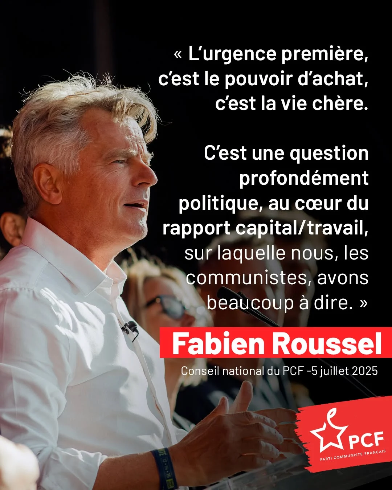
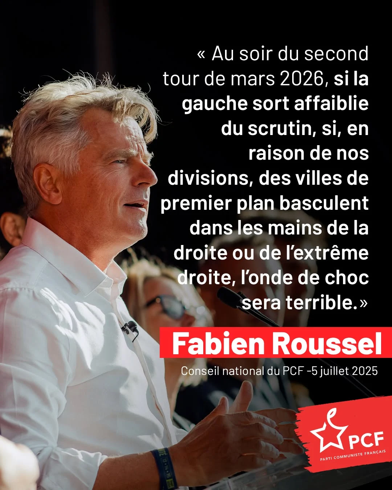
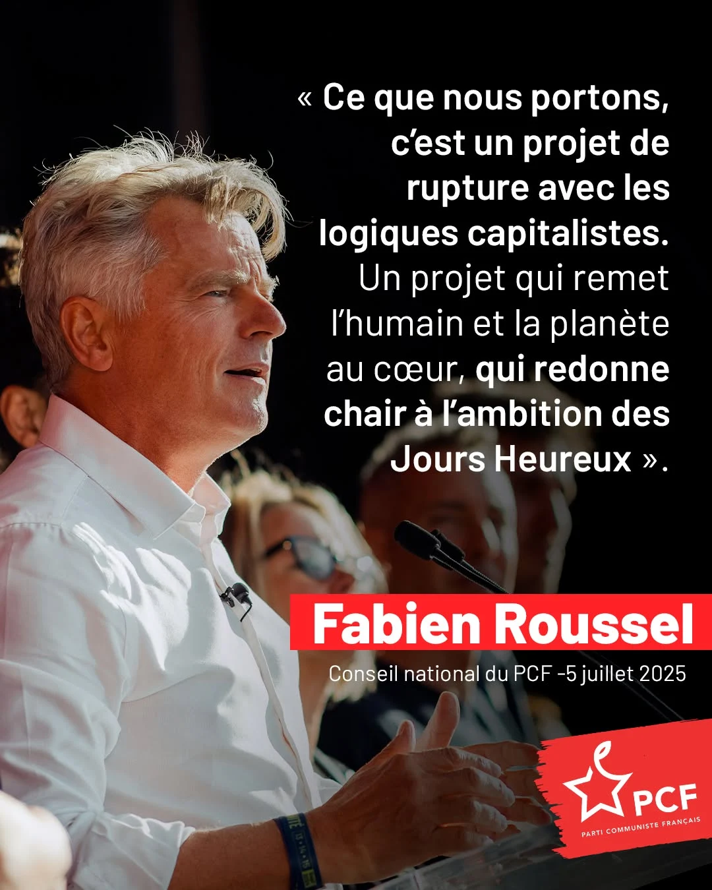

Publication relayée par le PCF 79
Le dernier Conseil national du PCF avant l’été
Date de mise à jour indiquée par Facebook · 6 juillet 2025
Texte de la publication · PCF national
Dernier Conseil National du PCF avant l'été
Au programme :
Pacte national pour l’avenir de la France
Vote sur le 40e Congrès du PCF
Désignation des chefs de file pour les municipales 2026 dans les villes de plus de 20 000 habitants
Face à la crise politique et sociale, Fabien Roussel, secrétaire national du PCF, appelle au rassemblement de la gauche aux municipales et porte un projet de rupture avec les logiques capitalistes : réindustrialisation, souveraineté énergétique, paix, justice sociale et renouveau démocratique.
Retrouvez son rapport introductif qui redonne chair à l'ambition des Jours Heureux. Ensemble, construisons un avenir commun à la hauteur des défis !



Sources
PCF national · publication relayée par le PCF 79 · bibliothèque Facebook · AR-0002-FB-01076
À lire aussi · Face au budget d’austérité, le PCF propose un pacte d’avenir